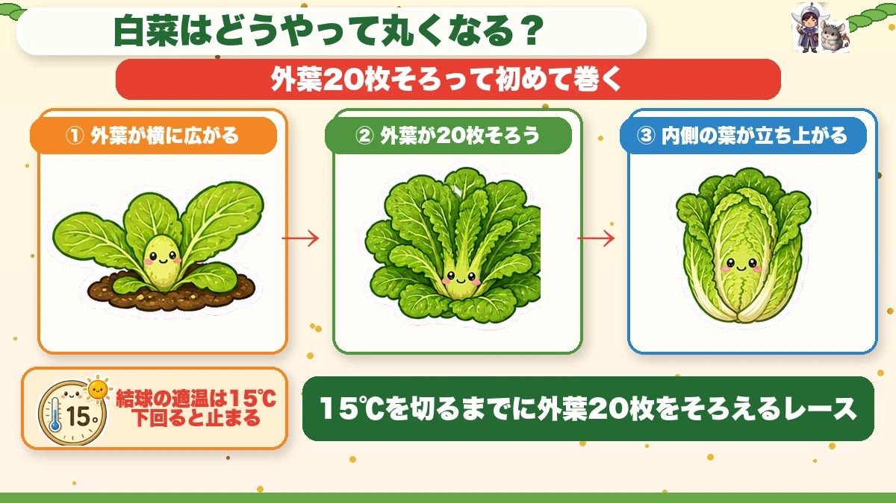
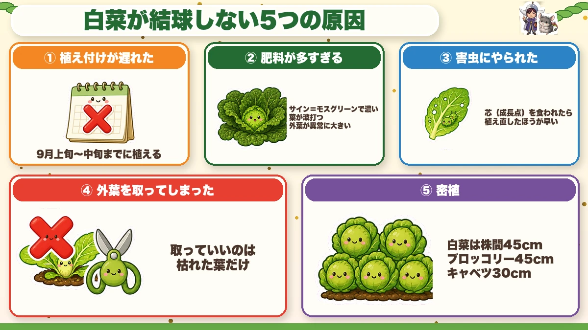
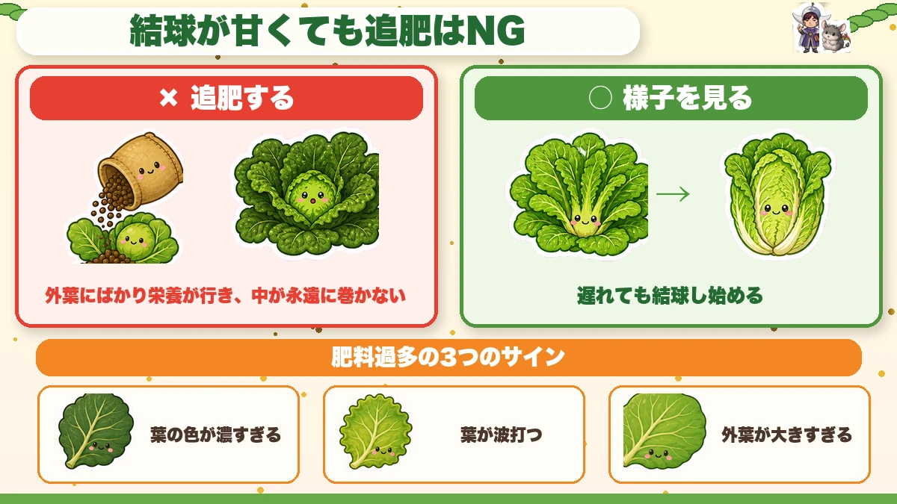
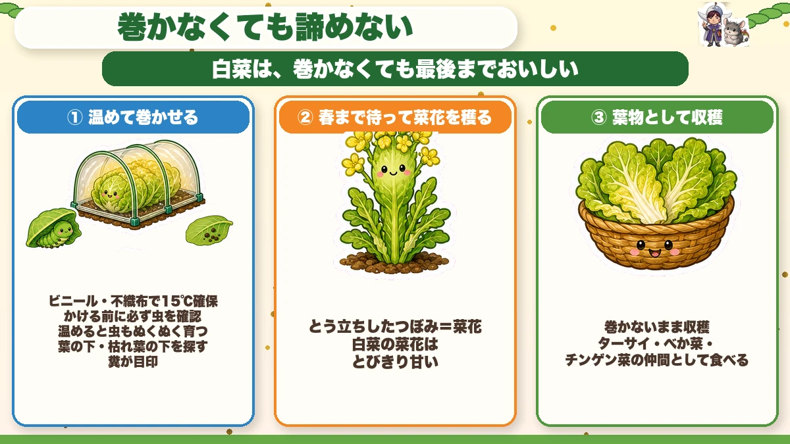
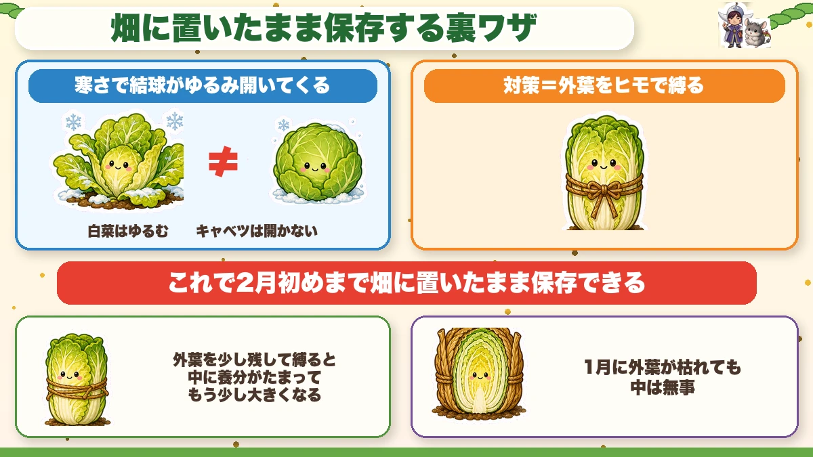

It won't heart until it has twenty outer leaves 🥬 So never remove them

🥬 "It's been weeks and it still isn't going round."
🥬 "Splendid leaves, and the middle is wide open."
🥬 "Pests got it and now it's full of holes."
Hello, I'm Eiko. Eight years of growing vegetables organically and without pesticides, and a teaching licence in science.
Chinese cabbage is one of the big autumn crops, and the one I hear "it failed" about most.
The headline:
A Chinese cabbage that won't heart isn't failing because it got cold.
There are five causes, and most of them were settled at planting. Which also means: get the first month right and it will heart.
And one more thing. A particular kindness — done with the best intentions — stops it hearting. That one is so common it gets most of the space below.
Understand how it hearts and the rest follows

What this diagram says （図解の文字）
- How does a Chinese cabbage go round?
- It only starts folding once it has twenty outer leaves
- ① "outer leaves spread sideways" ② "twenty outer leaves are in place" ③ "the inner leaves stand up"
- "The right temperature for hearting is 15 °C" — "below that it stops"
It doesn't grow round from the start. First the outer leaves spread sideways, and only once a certain number are in place do the inner leaves stand up and begin folding inward.
That number is about twenty.
This is the central point, so again: until it has twenty outer leaves, a Chinese cabbage will not heart. Ever.
And a second number: hearting proceeds best around 15 °C (59 °F). Below that, the folding motion stops.
Put the two together and the whole crop becomes one sentence:
It's a race to get twenty outer leaves before the temperature drops below 15 °C.
That's where "plant by mid-autumn" comes from. A week's delay in planting is a week less leaf-building — and if it hasn't reached twenty when the temperature falls, the game is over.
The five reasons it doesn't heart

What this diagram says （図解の文字）
- Five reasons a Chinese cabbage doesn't heart
- ① "planted late" — "plant by early to mid-autumn"
- ② "too much fertiliser" — "dark leaves rippling", "outer leaves abnormally large"
- ③ "pests got it"
① Planted late
The most common. Not enough time to build twenty outer leaves.
Already past the window? Don't throw it away — there are three ways to rescue it, at the end of this article.
② Too much fertiliser (or too little)
Surprising, perhaps: too much is the more common problem.
With too much feed the outer leaves flourish and nothing goes toward folding inward. At worst you get magnificent outer leaves and no heart at all.
An overfed plant is also more prone to disease and more attractive to pests — much like a person unwell from overeating.
Three signs:
- Leaf colour too dark — a heavy moss green
- Leaves rippling rather than lying flat
- Outer leaves abnormally large
Any of those and the fertiliser is working too hard.
③ Pests got it
Shredded leaves can't photosynthesise, so the plant concludes it hasn't the reserves to heart and the switch never flips.
So insect netting isn't "advisable" — treat it as compulsory, on from the day you plant.
Watch the centre especially. A borer gets into the growing point where the new leaves come from — and without new leaves it cannot heart.
Honestly: a plant with its centre eaten is quicker to replace. Last year I kept four of them hoping, and in late autumn I had four wide-open plants to look at.
④ Someone removed the outer leaves
This is the one.
As it grows, the outer leaves lie flat on the mulch and spread further and further sideways. They look like they're in the way — "the air can't move, I'll tidy those up".
That kindness stops it hearting.
Remember: it only starts folding once twenty outer leaves are in place. The outer leaves aren't clutter — they're the counter.
And they're the main photosynthesising surface. Removing them is shutting down factories while demanding faster production.
Leave the sprawling leaves alone. It looks untidy. That's fine.
One exception: leaves that have died and yellowed can go. They aren't photosynthesising, and left in place they start disease.
⑤ Planted too close
Tight spacing leaves no room for the outer leaves to spread, and they run into the neighbours before reaching twenty.
45 cm (18 in). It feels generous — that number exists to give the outer leaves their area.
For comparison: broccoli also wants 45 cm; cabbage manages at 30 cm (12 in). Same family, different spread, different spacing.
A loose heart is not a reason to feed it

What this diagram says （図解の文字）
- Even with a loose heart, don't feed it
- ✗ "feeding" — "everything goes to the outer leaves and the middle never folds"
- ○ "wait and watch" — "late, but it starts hearting"
- "Three signs of overfeeding: colour too dark / leaves rippling / outer leaves large"
Late in the season the thought arrives: "the heart is loose — maybe it needs feeding."
That is the single worst thing you can do.
Because, as above, if the loose heart was caused by too much fertiliser, feeding is petrol on the fire. More goes to the outer leaves, and the middle never folds.
So what do you do? Wait and watch.
Hold off the feeding and it will often start hearting anyway, just later — it's assembling its twenty leaves at its own pace.
If you're unsure, check the three signs. Dark, rippling, oversized outer leaves — then it has enough. More than enough.
When to take the netting off
Leave it on until the frosts start.
And a method I learned from a long-time organic grower and now copy: don't remove it — loosen it.
- Take the soil off the hem
- Leave the tunnel loosely in place
That keeps most pests out while letting the air move. Late autumn is more about disease than insects, so this balance suits it well.
Once it's hearting and you're getting frost most mornings, take it off.
Three ways to rescue one that didn't heart

What this diagram says （図解の文字）
- Don't give up on one that didn't heart
- "A Chinese cabbage is good eating to the end, hearted or not"
- ① "warm it and make it heart" — "plastic or fleece to hold 15 °C"
- "Check for pests before covering — warmth suits them too" — "under the leaves…"
① Warm it, and get it to heart
Hearting wants 15 °C — so give it 15 °C. A plastic or fleece tunnel to hold the temperature, and it can start folding.
One absolute rule: check for pests before you put the cover on.
A warm environment is paradise for insects too. Shut them in and they feed comfortably and strip it.
Where to look: under the leaves, and under the dead leaves at the base. Droppings are the marker — find those and the insect is close by.
② Wait for spring and pick the flower shoots (my preference)
When I learned this I thought: of course.
Left unhearted through winter, it bolts in spring and produces flower buds — nanohana, brassica flower shoots.
And Chinese cabbage flower shoots are remarkably sweet. Every brassica gives them, and of the ones I've compared, this is the best.
So when you conclude "that one isn't going to heart", switch it to the flower-shoot plan early. From that moment it stops being a failure.
③ Just eat it as a leafy green
Can't wait for spring? Harvest it unhearted and use it as an ordinary leafy vegetable.
You miss the sweetness of the white ribs, but the green leaves are perfectly good. Several familiar Asian greens are close relatives — use it the same way. Stir-fried, it's entirely respectable.
If yours hearted: store it in the ground

What this diagram says （図解の文字）
- The trick of storing it where it stands
- "Cold loosens the heart and it opens" — "Chinese cabbage loosens" ≠ "cabbage doesn't open"
- "The fix: tie the outer leaves with twine"
- "That keeps it in the ground until late winter"
Don't rush to cut it. Left in the ground into deep winter, it gets remarkably sweet.
But it has a habit: in cold weather the folded leaves gradually open.
A cabbage, once hearted, stays shut. A Chinese cabbage's heart is looser, so it opens — and once open, frost gets inside and damages it.
The answer: tie the outer leaves with twine so it can't open. Physically hold it closed, and it keeps in the ground until late winter. Cut them as you need them.
One refinement: tie it leaving a few outer leaves free and it goes on putting on a little more size. I'm in the slightly-loose camp.
The outer leaves die back in midwinter — no matter. Tied up, the inside is fine, and the dead outer leaves act as a quilt.
Science bit: why cold makes it sweet 🔬
Chinese cabbage, spinach, radish — all sweeter in winter, and not imagination.
For a vegetable, freezing means death: water freezing inside a cell means ice crystals destroying it from within.
So, sensing cold, it converts the starch it made by photosynthesis into sugar and stores it in the cells.
Pure water freezes at 0 °C; sugar solution doesn't — the same reason salt water resists freezing. Anything dissolved lowers the freezing point.
So the plant remakes itself as a hard-to-freeze sugar solution to get through winter — and we taste that sugar solution and call it sweet. Winter vegetables are sweet as a direct result of a plant trying very hard to survive. One does feel slightly apologetic.
To sum up
- ✅ It only hearts once it has about twenty outer leaves, and hearting stops below 15 °C
- ✅ It's a race to reach twenty before the temperature drops — hence the planting deadline
- ✅ Five causes: late planting, fertiliser, pests, removing outer leaves, crowding
- ✅ ★Never remove the sprawling outer leaves. Only the dead yellow ones
- ✅ Don't feed a loose heart. Dark, rippling, oversized leaves = already too much
- ✅ 45 cm spacing, to give the outer leaves room
- ✅ Net from planting; loosen rather than remove in late autumn
- ✅ Didn't heart? Warm it, wait for the flower shoots, or eat it as greens
- ✅ Tie the outer leaves and store it in the ground into late winter
- ✅ Sugar is antifreeze — that's why cold makes it sweet
You don't have to do all of it. If the outer leaves are sprawling all over the bed right now, the correct action is to leave them exactly where they are 🥬
Thank you for reading!